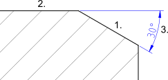

Angular
Toolbar / Icon:


Menu: Dimension > Angular
Shortcut: D, N
Commands: dimangular | dn
Toolbar / Icon:


Menu: Dimension > Angular
Shortcut: D, N
Commands: dimangular | dn
Creates angular dimensions between two reference lines as shown here:
